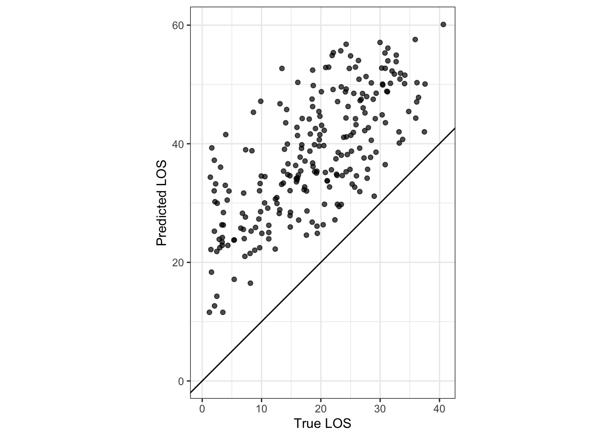
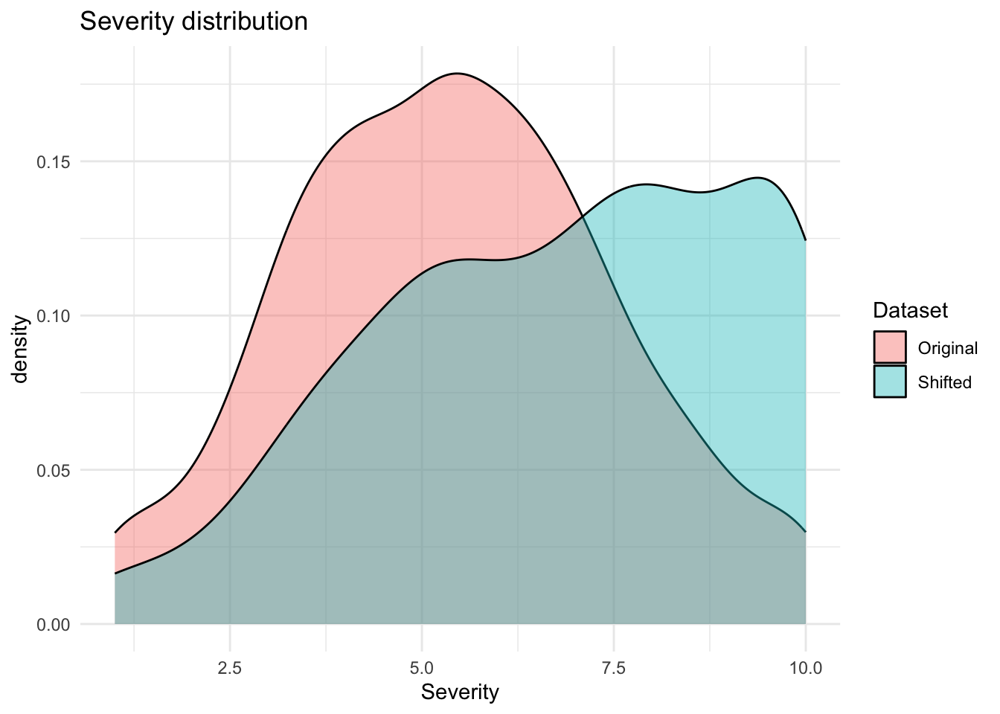
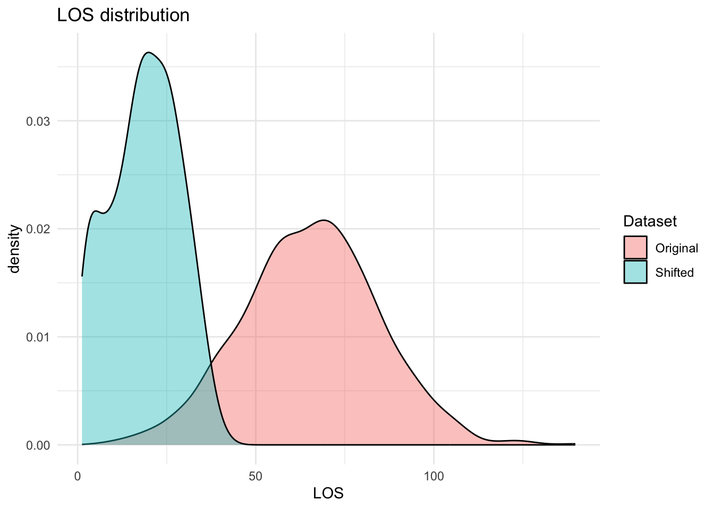

In the previous exercise, our linear regression predicted length of stay (LOS) quite well using Age and Severity. A low Mean Absolute Error (MAE) on the test set suggests that within the same setting and patient population, the model generalizes well.
But in healthcare we care about a stronger kind of generalization:
Will the model still work in a different hospital, or next year, or during a major event? This is where distribution shift becomes important. What is distribution shift? A model assumes that future patients look statistically similar to past patients but, feature distribution might change (e.g., ages are younger, severity scores higher) or, the relationship between features and outcome might change too (i.e., the “rules of reality” change). For example, below we will have new data from a very different point in time. Imagine a pandemic or system-wide shock. Patients arriving at hospital are now:
younger than before,
more severely ill than patients in the training data,
potentially affected by new factors (e.g., asthma, comorbidities, viral load, staffing shortages).
Even if our model was “correct” for the old world, it may fail in the new one because it has not seen this kind of patient mix (covariate shift), and/or the true LOS mechanism has changed (concept shift).
So the key question is: Does our model still perform well when the data distribution changes?
Let’s test that by loading a new (shifted) dataset, evaluating our chosen performance metric (MAE), and comparing feature distributions to the original data.
Part A - R
Let’s start in R by loading the original dataset and the new, shifted dataset.
We then load the model trained on the original data and test its performance on the new data.
Now we apply the previously trained model to the new dataset.
If the model generalizes well, the MAE should remain low.
A large increase in MAE indicates that the model is struggling under the new clinical conditions.
# 2) Predict + RMSE on shifted datanew_preds<-predict(los_fit, new_data =new_data)%>%bind_cols(new_data)new_mae<-mae(new_preds, truth =LOS, estimate =.pred)cat("MAE on shifted NEW data:", new_mae$.estimate, "\n")
MAE on shifted NEW data: 19.08709
How much has the performance changed? Take a moment to look at the MAE calculated from the testing set.
ggplot(new_preds, aes(x =LOS, y =.pred))+geom_point(alpha =0.7)+geom_abline(intercept =0, slope =1)+coord_equal()+scale_x_continuous(limits =c(0, NA))+scale_y_continuous(limits =c(0, NA))+labs(x ="True LOS", y ="Predicted LOS")+theme_bw()

Our predictions are now far off!
Next, we compare the distributions of Age and Severity between the original and new datasets.
If these distributions differ substantially, the model is being asked to extrapolate outside its training experience—one of the key causes of distribution shift.
ggplot(combined, aes(x =Severity, fill =Dataset))+geom_density(alpha =0.4)+labs(title ="Severity distribution")+theme_minimal()

ggplot(combined, aes(x =LOS, fill =Dataset))+geom_density(alpha =0.4)+labs(title ="LOS distribution")+theme_minimal()

The old model predicts longer LOS than these new young patients actually have. This happens because LOS no longer depends on Age and Severity in the same way as it did in the original dataset. The model is using outdated relationships!
Part B - Python
Below we repeat the same evaluation using Python.
Just like in R, we load the previously saved model and assess its performance on the shifted dataset.
import numpy as npimport pandas as pdfrom sklearn.metrics import mean_absolute_errorimport matplotlib.pyplot as pltimport joblibnew_data = pd.read_csv("new_los_data.csv")X_new = new_data[["Age", "Severity"]]y_new = new_data["LOS"]model = joblib.load("linear_model.pkl")pred_new = model.predict(X_new)mae_new = mean_absolute_error(y_new, pred_new)print("MAE on shifted NEW data:", mae_new)
MAE on shifted NEW data: 32.562069097062356
A predicted-vs-true scatterplot helps us see whether the model is systematically under- or over-predicting in the new environment.
How do the Age and Severity distributions in the shifted dataset differ from the original data?
Why does the MAE change when evaluating on the shifted dataset?
Extension (optional)
Try evaluating the model using another performance metric.
For example, compute the Root Mean Squared Error (RMSE) and compare its behaviour with MAE.
Does RMSE react more strongly to large errors in this shifted dataset?
Reading
Interested in these concepts? Want to know more? Read through these recently published papers, where this issue is explored through both methodology and clinical practice.
---title: "(3) Distribution Shift"format: htmleditor: visual---### **`Overview`**In the previous exercise, our linear regression predicted length of stay (LOS) quite well using Age and Severity. A low Mean Absolute Error (MAE) on the test set suggests that within the same setting and patient population, the model generalizes well.But in healthcare we care about a stronger kind of generalization:- Will the model still work in a different hospital, or next year, or during a major event? This is where distribution shift becomes important.What is distribution shift? A model assumes that future patients look statistically similar to past patients but, feature distribution might change (e.g., ages are younger, severity scores higher) or, the relationship between features and outcome might change too (i.e., the “rules of reality” change). For example, below we will have new data from a very different point in time. Imagine a pandemic or system-wide shock. Patients arriving at hospital are now:- younger than before,- more severely ill than patients in the training data,- potentially affected by new factors (e.g., asthma, comorbidities, viral load, staffing shortages).Even if our model was “correct” for the old world, it may fail in the new one because it has not seen this kind of patient mix (covariate shift), and/or the true LOS mechanism has changed (concept shift).So the key question is:*Does our model still perform well when the data distribution changes?*Let’s test that by loading a new (shifted) dataset, evaluating our chosen performance metric (MAE), and comparing feature distributions to the original data.```{r, include=FALSE}library(reticulate)# one-off setup (if you haven't done it yet)# install_miniconda()##conda_create(## envname = "hds-python",## python_version = "3.11",## packages = c("numpy", "pandas", "matplotlib", "seaborn", "scikit-learn")##)use_condaenv("hds-python", required =TRUE)#py_config()#conda_install("hds-python", c("jupyter", "plotly"))```---### Part A - R Let's start in **R** by loading the original dataset and the new, shifted dataset. We then load the model trained on the original data and test its performance on the new data.```{r, message=FALSE, warning=FALSE}library(data.table)library(tidymodels)new_data <-fread("new_los_data.csv")old_data <-fread("los_data.csv")head(new_data)head(old_data)```Now lets load the model we previoulsy created on our old/original dataset```{r}los_fit <-readRDS("los_fit_model.RDS")```Now we apply the previously trained model to the new dataset. If the model generalizes well, the MAE should remain low. A large increase in MAE indicates that the model is struggling under the new clinical conditions.```{r}# 2) Predict + RMSE on shifted datanew_preds <-predict(los_fit, new_data = new_data) %>%bind_cols(new_data)new_mae <-mae(new_preds, truth = LOS, estimate = .pred)cat("MAE on shifted NEW data:", new_mae$.estimate, "\n")```How much has the performance changed? Take a moment to look at the MAE calculated from the testing set.```{r}ggplot(new_preds, aes(x = LOS, y = .pred)) +geom_point(alpha =0.7) +geom_abline(intercept =0, slope =1) +coord_equal() +scale_x_continuous(limits =c(0, NA)) +scale_y_continuous(limits =c(0, NA)) +labs(x ="True LOS", y ="Predicted LOS") +theme_bw()```Our predictions are now far off! Next, we compare the distributions of Age and Severity between the original and new datasets. If these distributions differ substantially, the model is being asked to extrapolate outside its training experience—one of the key causes of distribution shift.```{r}# 3) Compare distributions combined <-bind_rows( old_data %>%mutate(Dataset ="Original"), new_data %>%mutate(Dataset ="Shifted"))ggplot(combined, aes(x = Age, fill = Dataset)) +geom_density(alpha =0.4) +labs(title ="Age distribution") +theme_minimal()ggplot(combined, aes(x = Severity, fill = Dataset)) +geom_density(alpha =0.4) +labs(title ="Severity distribution") +theme_minimal()ggplot(combined, aes(x = LOS, fill = Dataset)) +geom_density(alpha =0.4) +labs(title ="LOS distribution") +theme_minimal()```The old model predicts longer LOS than these new young patients actually have. This happens because LOS no longer depends on Age and Severity in the same way as it did in the original dataset. The model is using outdated relationships!---### Part B - Python Below we repeat the same evaluation using Python. Just like in R, we load the previously saved model and assess its performance on the shifted dataset.```{python}import numpy as npimport pandas as pdfrom sklearn.metrics import mean_absolute_errorimport matplotlib.pyplot as pltimport joblibnew_data = pd.read_csv("new_los_data.csv")X_new = new_data[["Age", "Severity"]]y_new = new_data["LOS"]model = joblib.load("linear_model.pkl")pred_new = model.predict(X_new)mae_new = mean_absolute_error(y_new, pred_new)print("MAE on shifted NEW data:", mae_new)```A predicted-vs-true scatterplot helps us see whether the model is systematically under- or over-predicting in the new environment.```{python}plt.figure()plt.scatter(y_new, pred_new, alpha=0.7)mn =min(y_new.min(), pred_new.min())mx =max(y_new.max(), pred_new.max())plt.plot([mn, mx], [mn, mx]) # 45-degree lineplt.xlabel("True LOS")plt.ylabel("Predicted LOS")plt.show()```---## Reflection1. How do the Age and Severity distributions in the shifted dataset differ from the original data?2. Why does the MAE change when evaluating on the shifted dataset? ## Extension (optional)Try evaluating the model using another performance metric. For example, compute the **Root Mean Squared Error (RMSE)** and compare its behaviour with MAE. Does RMSE react more strongly to large errors in this shifted dataset?## ReadingInterested in these concepts? Want to know more? Read through these recently published papers, where this issue is explored through both methodology and clinical practice. - [The Lancet digital health - viewpoint](https://www.thelancet.com/journals/landig/article/PIIS2589-7500(20)30186-2/fulltext) - [COVID-19 generalizability](https://www.nature.com/articles/s41746-022-00614-9)